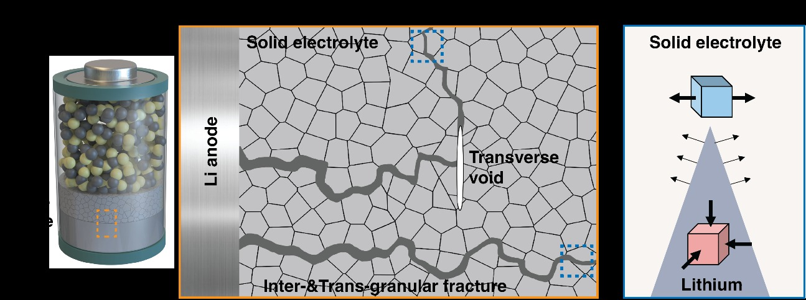
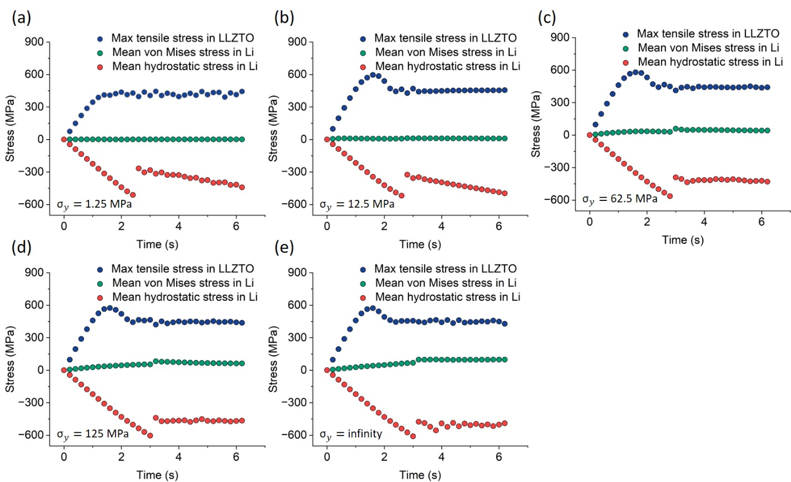
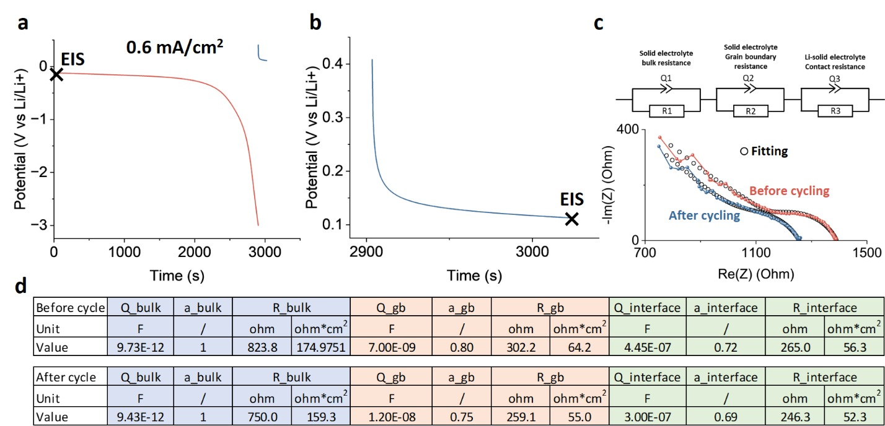
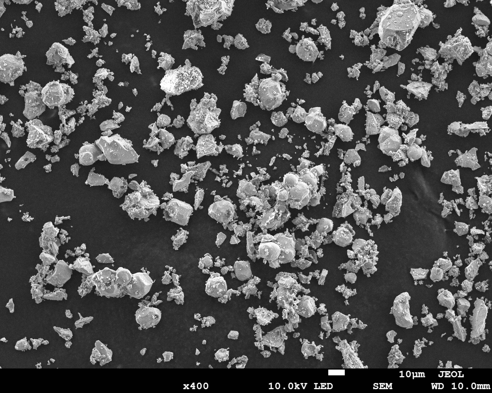
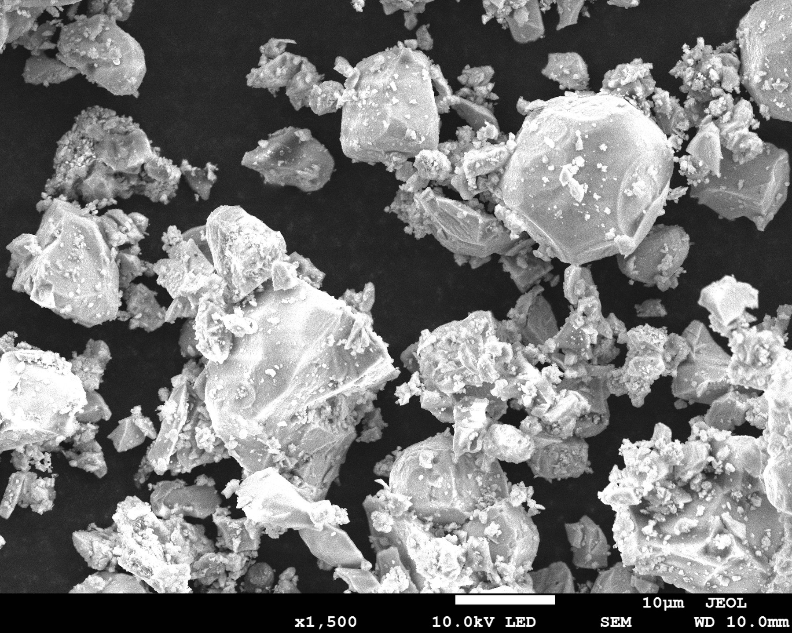

Solid-state batteries are often compared through ionic conductivity, electrochemical stability, and lithium-metal compatibility. Those properties matter, but a 2026 Nature study, Mechanically driven Li dendrite penetration in garnet solid electrolyte, shows why mechanics belongs in the same screening framework.
Using cryogenic microscopy, electron-energy-loss spectroscopy, crystallographic mapping, and phase-field fracture models, Zhang and co-workers investigated how lithium penetrates polycrystalline Li6.6La3Zr1.6Ta0.4O12 (LLZTO). Their evidence supports a fracture-driven mechanism: plated lithium occupies cracks, develops a strongly hydrostatic stress state under confinement, and generates tensile stress in the surrounding ceramic.
The Soft-Lithium, Hard-Ceramic Problem
Lithium metal is much softer than a dense garnet ceramic, so penetration can appear counterintuitive. Two broad explanations have been debated: mechanically driven cracking as lithium plates into confined flaws, and electronically enabled lithium deposition inside the electrolyte, including at grain boundaries.
The study directly examined material near dendrite tips. Cryo-STEM/EELS showed lithium filling nanoscale crack tips and micrometer-scale cracks. In sampled regions ahead of those tips, the authors did not detect measurable lithium enrichment or isolated lithium-metal nuclei. That result favors crack filling and propagation in the tested material and geometry, while not implying that electronic leakage is irrelevant in every solid electrolyte or cell design.

Cracks Cross Grains as Well as Grain Boundaries
The observed fracture path was tortuous and included both intergranular and transgranular events. In the in-plane cell analysis, 20 ± 1% of roughly 100 grains exhibited transgranular cracking. Nearly 75% of the measured intergranular cracks deflected by more than 40 degrees.
Phase-field analysis helped interpret those paths. Fitting the experimental crack statistics to the modeled fracture map suggested that average grain-boundary fracture energy was approximately three to five times lower than bulk fracture energy. Grain boundaries were therefore weaker on average, but they were not the only route available to a propagating crack.
For material screening, this argues for attention to relative density, pores, surface damage, residual flaws, grain-boundary quality, and microstructural uniformity. A high-conductivity pellet with weak or poorly controlled fracture paths may still be vulnerable during lithium plating.
Hydrostatic Stress Drives the Fracture Model
Crystallographic measurements showed limited lattice rotation and localized plasticity in the confined lithium. In the authors' phase-field calculations, lithium plating inside a crack produced hydrostatic stress approaching 600 MPa and tensile stress of comparable order in the surrounding LLZTO. The modeled von Mises stress remained much smaller than the hydrostatic component across assumed lithium yield strengths from approximately 1 to 125 MPa and in a purely elastic limit.
The distinction matters: the reported stress magnitude is a modeling result constrained by experimental observations, not a direct pressure-gauge measurement inside the crack. Together, however, the microscopy and model support the conclusion that confinement prevents easy stress relaxation and allows lithium plating to drive ceramic fracture.

Why Symmetric-Cell Data Need Mechanical Context
Li | solid electrolyte | Li cells remain useful for plating/stripping and interface screening, but a voltage trace or fitted resistance does not identify the failure mechanism by itself. Surface finish, pellet density, stack pressure, current density, transferred capacity, contact area, and pre-existing defects all influence local current and stress.
In Supplementary Fig. S10, the authors show cycling at 0.6 mA/cm2 and EIS before and after the test. Their fit uses constant phase elements for non-ideal responses. The accompanying note attributes the depressed Li-LLZTO interface response to spatially heterogeneous charge and mass transfer. EIS arcs in solid-state cells should therefore not be assumed to represent ideal, spatially uniform interfaces.

| Report with Li symmetric-cell data | Why it matters |
|---|---|
| Pellet density and thickness | Influence current distribution, resistance, and available fracture paths. |
| Surface preparation | Changes physical contact, surface contamination, and current constriction. |
| Applied pressure | Can improve contact while also changing stress and defect evolution. |
| Current density and areal capacity | Define plating demand more completely than current density alone. |
| EIS before and after cycling | Tracks changes in bulk, grain-boundary, and interface response when the model is justified. |
| Post-cycling cross sections | Help distinguish contact loss, interfacial reaction, and internal fracture. |
Engineered Defects: Guidance, Not a Production Recipe
The study also tested whether a growing dendrite could be redirected. Arrays of Vickers indents were placed across the anticipated propagation path. Dendrites that encountered cracks associated with those indents deflected by roughly 45 degrees and followed the pre-existing crack direction; a dendrite that missed the engineered obstacle continued and shorted the model cell.
This is a mechanics demonstration, not evidence that random defects improve batteries. Uncontrolled cracks remain dangerous. The more useful design lesson is that geometry and local fracture resistance influence where a crack travels, creating future opportunities for tougher grain boundaries, higher fracture toughness, or deliberately designed arrest and redirection features.

What Mechanics Adds to Material Screening
| Screening property | Electrochemical or mechanical relevance |
|---|---|
| Ionic conductivity | Sets ion-transport capability, but must be tied to temperature, density, and test geometry. |
| Electronic conductivity | Helps evaluate whether electronic leakage could support internal reduction or deposition. |
| Particle size and morphology | Affect packing, green density, sintering, flaw population, composite contact, and coating behavior. |
| Relative density and porosity | Influence resistance and the distribution of stress concentrators and connected defects. |
| XRD and phase purity | Confirm the target phase and identify secondary phases that may alter transport or mechanics. |
| Grain-boundary integrity | Controls both transport and resistance to intergranular crack deflection. |
| Fracture toughness | Defines resistance to propagation once a flaw experiences sufficient tensile driving force. |
| Li-metal interface response | Combines wetting, reaction, current distribution, voiding, pressure, and fracture behavior. |
Connecting the Study to Winigen Solid-State Materials
The paper studies dense polycrystalline LLZTO rather than loose commercial powder. Powder specifications do not determine final pellet toughness by themselves, but they influence processing, density, microstructure, and reproducibility. The Winigen solid-state electrolyte family therefore presents particle size, conductivity, moisture, impurity, SEM, PSD, and XRD data where available.
LLZTO garnet oxide
LLZTO powder directly relates to the garnet chemistry examined in the cited study. It is offered for garnet electrolyte screening, composite electrolyte studies, and coating development, with customizable particle size and supporting SEM and XRD images. Final densification, grain-boundary chemistry, surface preparation, and mechanical properties remain process-dependent and should be measured on the fabricated electrolyte body.



LATP oxide powders and slurries
LATP powder, D50 0.30 µm, illustrates particle-size-controlled oxide screening. The listed specification includes D50 0.30 ± 0.05 µm, water ≤500 ppm, magnetic impurities ≤500 ppb, and ionic conductivity ≥0.55 mS/cm at 25 °C for a pressed pellet. LATP slurry formats extend the processing discussion toward coatings and composite layers.


Sulfide and halide comparison materials
The mechanics lesson extends beyond garnets even though fracture mode, elastic properties, and interface chemistry differ by material. Li6PS5Cl, D50 2.123 µm separates ionic conductivity (3.5 mS/cm) from electronic conductivity (1.74 × 10-6 mS/cm) and provides PSD, water, impurity, and XRD information. Li3InCl6, D50 0.9 µm provides a halide comparison point for cathode-side solid-state screening.
A Practical Electrochemical-Mechanical Workflow
| Stage | Recommended questions |
|---|---|
| 1. Powder characterization | What are the phase, D10/D50/D90, morphology, moisture, impurities, ionic conductivity, and electronic conductivity? |
| 2. Dense-body preparation | What density and microstructure result from the selected pressing, sintering, or coating process? |
| 3. Mechanical baseline | What are the hardness, modulus, fracture toughness, flaw population, and grain-boundary quality of the processed electrolyte? |
| 4. Interface screening | How do surface finish, interlayers, pressure, current density, and areal capacity affect Li contact and EIS? |
| 5. Failure analysis | Does failure begin through contact loss, reaction, pores, grain boundaries, transgranular cracking, or a combination? |
| 6. Cell validation | Does the selected material survive realistic cathode loading, electrolyte thickness, stack pressure, temperature, and cycling protocol? |
Bottom Line
The central lesson from Zhang and co-workers is that lithium penetration in garnet electrolyte can be an electrochemical-mechanical fracture process. In their LLZTO system, confined lithium filled cracks, developed high hydrostatic stress, and drove both intergranular and transgranular fracture. Grain-boundary weakness and defect geometry influenced the path.
For battery developers, conductivity remains necessary but is not sufficient. Material screening should connect powder quality to densification, microstructure, grain-boundary integrity, lithium contact, pressure, current, EIS evolution, and post-cycling fracture evidence.
Winigen Materials supports these workflows with LLZTO garnet oxide powder, oxide, sulfide, and halide solid-state materials, particle-size-controlled grades, characterization data, and RFQ-based material matching.
References
- Zhang, Y. et al. Mechanically driven Li dendrite penetration in garnet solid electrolyte. Nature 652, 912-918 (2026). doi:10.1038/s41586-026-10415-9.
- Supplementary Information for Mechanically driven Li dendrite penetration in garnet solid electrolyte (2026).
- Kalnaus, S. et al. Solid-state batteries: The critical role of mechanics. Science 381, eabg5998 (2023).
- Ning, Z. et al. Dendrite initiation and propagation in lithium metal solid-state batteries. Nature 618, 287-293 (2023).
- Athanasiou, C. E. et al. Operando measurements of dendrite-induced stresses in ceramic electrolytes using photoelasticity. Matter 7, 95-106 (2024).